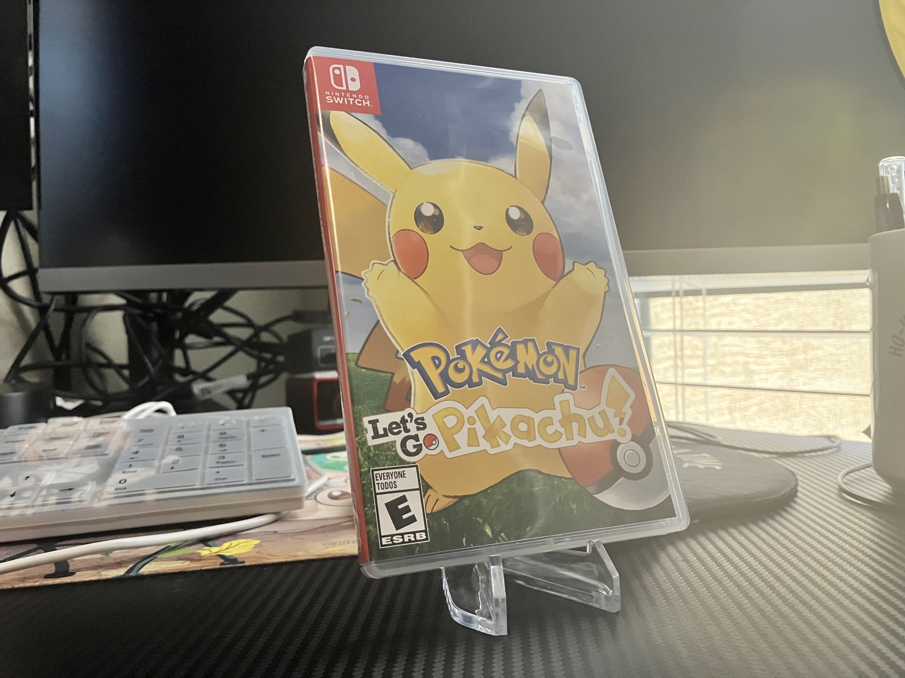
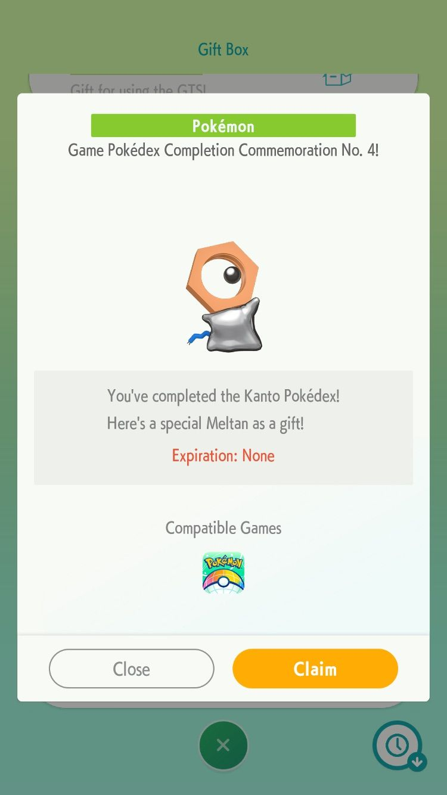

1game1week - Week 8 (2/19/25) - Pokemon: Let's Go Pikachu
It's Week 8! (2/19 -> 2/26)
I'm currently writing this post, near to midnight, in my living room, because I'm waiting to see if the drip in the ceiling I had comes back. Apparently my upstairs neighbor's washing machine flooded her apartment. Since water just so happened to believe Newton when he said stuff couldn't just float around and junk, some ended up seeping through my ceiling and giving me a heart attack.
So... now I have a huge water spot in my ceiling. It's very unfortunate that I just so happened to sign a 2 year lease, like, two weeks ago. Hopefully maintenance can help out to get the remaining water out and dry up any leftover moisture so that mold doesn't grow.
Who cares about silly water anyways?
New games from 2/12 -> 2/18:
* Fitness Boxing feat. Hatsune Miku (Switch)
Currently, my backlog (https://backloggery.com/Aru_star_) is at +5 (lower is better).
And onto 1g1w. Once again, a game is considered "beaten" if I've accomplished the main objective of the game.
GAME: Pokemon: Let's Go Pikachu
PLATFORM: Switch
STARTED ON: 2/4
BEATEN ON: 2/5
TOTAL PLAYTIME: 24 hours (according to the save file)
So I did all this for a Meltan...
Everyone who has known me for more than two seconds knows I've been a pretty big fan of Pocket Monsters my entire life.
The 'storage' app, Pokemon Home, has recently had some challenges for users to catch every guy available in specific games and register them into the app. In the community, this is known as a Living Dex. I actually did the same thing here that I did in my Brilliant Diamond post.
While I've had and maintained a Living Dex since Gen 6 (2013), these actually require the game of origin to be the ones listed in the challenge or it won't count.
The challenge for Let's Go Pikachu/Eevee was actually unannounced prior to me playing, but I figured it'd just be a matter of time before it was revealed since Pokemon Day is coming up; and since I'm already going to have to make a Living Dex, might as well just start a new game and go through it.
I actually bought this game a couple weeks ago (it's listed in my week 6 post). Went through the game, catching every 'mon I was able to. Of course, there's still version exclusives, but those were decently easy to get in my already-completed Eevee.
The total playtime listed above doesn't reflect the time it took to beat the league, and it might not be fully accurate due to resetting and such. The Beaten On date does mark that, though. Either way, it's a decent approximation of how long I played.
In 24 hours, I was able to catch everything I needed to fill a Living Dex, and was able to mark the challenge as complete in Pokemon Home. All that was left was to wait and see what TPCI would throw in as a reward. I was hoping for a shiny Mew, since everything they've been doing has been previously-shiny-locked monsters and the last time shiny Mew was available in a main series game was (checks notes) Emerald in a JP-exclusive event but... it was a shiny Meltan.
A completely useless shiny Meltan. I can't evolve it since it was specifically designed to only be evolved in Go, I can't Gmax it, it's just a guy. It's just there. It's not even as if it was new... shiny Meltan has been available in Pokemon Go for years now.
Am I complaining about getting a lame virtual monster in a children's videogame? Yes. Yes I am.
Had a lot of fun playing, outside of some random jank catch mechanics. It ended up being far more enjoyable to play the game in handheld mode, since I could just use gyro aiming and throw with A instead of slinging my Joy-Con around, just so I can recreate what various TVs experienced back in 2005 when the Wii released.
I've been a little hard time getting myself to start Zone of the Enders back up, though I've been playing a few short games here and there. Thankfully I still have a few more 1g1w buffer entries before I'm actually playing a game the week of, so I'll be fine for now.
As always, please feel free to shoot me a message to recommend your favorite game. I'd love to hear what you guys have to recommend.
See you next week!


Thanks for reading! If you need to contact me for any reason, please feel free to email me at aru@hoshikawa-aru.com.